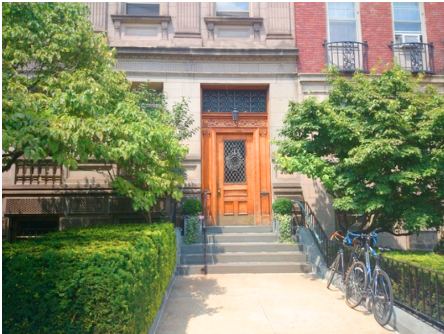

goodness
goodnessHome
Contact
Do you have general questions about the Mediterranean diet, Vegetarian or Vegan diets, whole grains, or African Heritage diets? Want
to know more about Culinaria trips, or our Oldways Cheese Coalition? Are you a health professional looking for creative and accurate
materials? Contact us.
PARTNERSHIP
Permision and Cobrading
OLDWAYS IS LOCATED IN THE HEART OF BOSTON’S BACK BAY
General requests
Media requests
+Using oldways Materials:Licensing and Co-Brabding
+ Job Opening
Olways
266 Beacon Street Suite 1
Boston , MA 02116
TEL 617-421-5500
FAX 617-421-5511
info@oldwaysspt.org